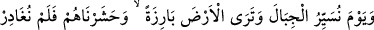
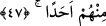
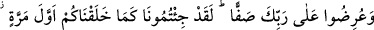

Uşaklarım bana yemek getirsinler
Rûhumu rahat ettirip onu besleyeyim
Bu sert döşek beni öldürdü
Gidip bundan sonra Hind kumaşından döşeyeyim”
Hayâli onu şaşkına ve dîvâneye çevirdi
Sanki beynine yengeç tırnağını batırmıştı
Münâcâttan fâriğ oldu, âh u zârı kalmadı
Yemesi, uyuması, zikri ve namazı kalmadı
Başındaki sarhoşluk işvesinden çöle düştü
Çünkü bir yerde kararı kalmadı ki otursun
Bir kimse kabrin başında çamur yoğuruyordu
Kabre koymak için çamurdan kerpiç yapıyordu
O ihtiyar düşününce biraz kendine geldi
Dedi ki: Ey kısa bakışlı nefis, öğüt al.
Bu altın kerpice neden gönlünü bağladın?
Bir gün senin toprağından da kerpiç ederler
Sen fayda ve mal endişesinde gafilsin
Ki ömür sermayesi ayaklar altına alındı
Gaflet sürmesini gözünden temizle
Çünkü yarın toprağın gözüne sürme olursun
47. (Düşün) o günü ki, dağları yürütürüz ve yeryüzünün çırılçıplak olduğunu
görürsün. Hiçbirini bırakmaksızın onları (tüm ölüleri) mahşerde toplamış olacağız.
“(Düşün) o günü ki, dağları yürütürüz.” Yâni o günü hatırla ki dağları yerlerinden
söküp öylece havada yürütürüz. Ya da onları toz duman ettikten sonra cüzlerini havada
yürütürüz. Bunun hatırlatılması müşrikleri, söylemeye cür’et ettikleri asılsız
iddiâlarından sakındırmak içindir.
Ey Muhammed ya da görme istîdâdında olan herkes, o vakit “yeryüzünün” her
tarafının “çırılçıplak olduğunu” onu örten ne bir ot, ne ağaç ve ne dağ, hiçbir bitki
örtüsü olmadığını “görürsün. Hiçbirini” yerin altında “bırakmaksızın onları
mahşerde” mü’min-kâfir hepsini bir yere “toplamış olacağız.”